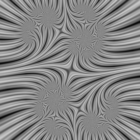
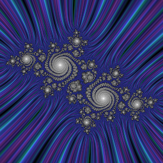

fractal-mpi
Introduction
This program renders Julia sets of the function f(z) = z2 + c, coloring interior points by their proximity to the set and exterior points by their divergence rate.
The program reads image and fractal parameters from an input file (see the examples directory), and any of these can be overriden with a command-line argument.
Usage
If this is your input file
<fractal> Cx = -0.8 Cy = 0.156 Lx = 1.1 # physical size center_x = 0.55 # center center_y = 0.05 <image> Nx = 480 Ny = 300 # coloring for interior points tolerance = 50.0 # what counts as inside? exp = 4.0 # exponent base = 0.1 # min color # coloring for exterior points nstripes = 3 s1 = 10.0 s2 = 5.0 s3 = 3.0 color_1 = DarkChocolate color_2 = Red # Indigo color_3 = MidnightBlue # output file file = demj.ppm <par_end>
You can run the program as
./fractal_mpi.x -i input.frac
or, if you want to override certain options
./fractal_mpi.x -i input.frac fractal/Lx=2 image/tolerance=100
Examples
 
Date: 2010-10-28 19:07:26 PDT
HTML generated by org-mode 6.36 in emacs 23